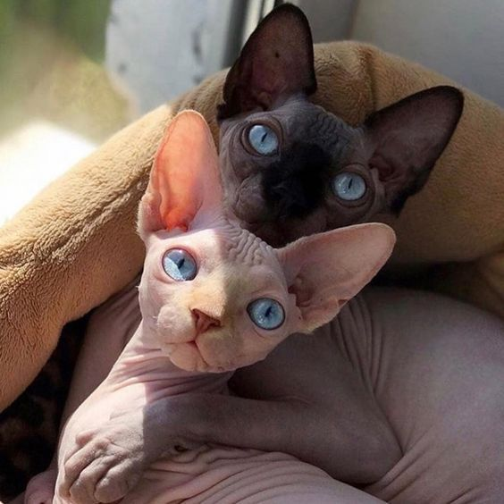
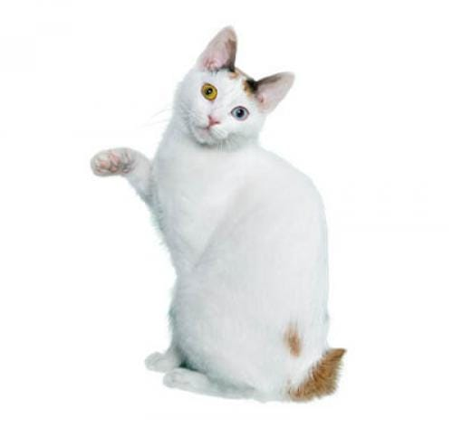
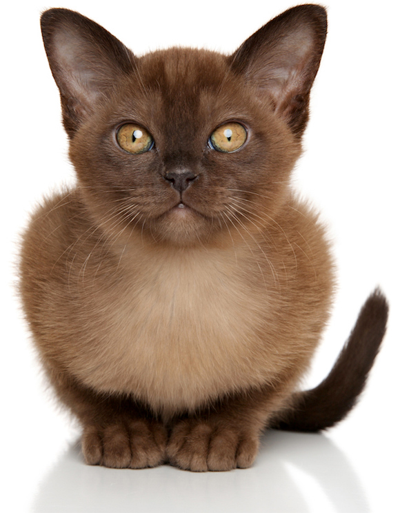
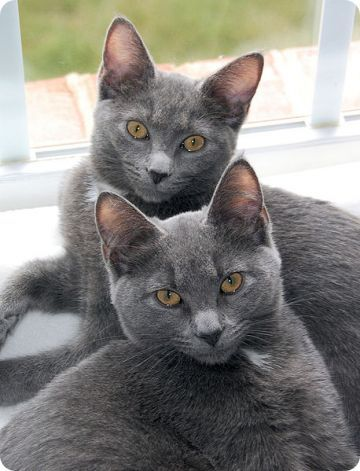

El Británico de pelo corto es un gato juguetón, cariñoso, extremadamente fiel y un buen compañero para las personas que viven solas.
El Británico de pelo corto es un gato muy fuerte de tamaño entre medio y grande. Tiene mucha musculatura y huesos robustos. Su aspecto es redondeado y grueso. Al ser un gato fuerte, todos los componentes de esta raza deben estar bien desarrollados. El británico de pelo corto tiene un pecho ancho, un cuello musculoso, mandíbulas fuertes y un hocico bien desarrollado. Las patas son gruesas y fuertes. Esta raza mantiene su aspecto originario, el de un gato que debía mantener a los roedores alejados del granero y la casa.
El pelo del británico es grueso y denso y en invierno se vuelve más largo y grueso. La textura del pelo es relativamente dura, ya que su función es proteger al gato. Al sujetar a un británico entre los brazos, siempre se debe sujetar su parte trasera. No se le debe pasar el extremo trasero sobre el abdomen, puesto que en esa postura podría sentirse incómodo e inseguro.
Gato Siamés
cariñoso.
El Siamés, un gato sumamente bello, es muy cariñoso y requiere dedicación por parte de su propietario.
Es un gato alargado y elegante. Tiene cuerpo, cuello, patas y cola alargados. Esta raza es de tamaño medio, aunque con músculos proporcionados. El siamés es un gato de extremos. Su cabeza es un triángulo alargado. Las orejas altas están situadas sobre la cabeza a continuación de dicho triángulo. Su nariz es larga y recta y las patas son largas y esbeltas. Tiene la cola larga y rematada en punta. Los ojos, almendrados, son de un verde brillante.
El pelo es corto y brillante y adherido al cuerpo. La belleza del gato siamés reside en su esbelto cuerpo, los ojos azules y el contraste entre el color del cuerpo y el color más oscuro de las extremidades. Este contraste se llama restricción de color o, más frecuentemente, pointing. El color del pelo de las orejas, cola y pies es distinto al del cuerpo, y este color más oscuro se mezcla gradualmente con el color del cuerpo, más claro. En la cara puede verse también una máscara del mismo color point más oscuro. Esta máscara le cubre la cara, rodea los ojos y cubre las almohadillas de los bigotes. La máscara es más pequeña en un gatito y aumenta de tamaño gradualmente a medida que crece.
Sphynx
Cariñoso y Amigable.

Famoso por su ausencia de pelo, el esfinge es también amable, cariñoso y enérgico, siempre ansioso del afecto humano. En contraste con su aspecto regio y su expresión seria, el esfinge es un payaso acróbata que no se toma a sí mismo muy en serio. Le encanta entretener y divertir a sus humanos y te seguirá por toda la casa como un perrito. Si estás pensando en adoptar un esfinge, sigue leyendo para averiguar todo lo que necesitas saber.
El esfinge es un gato de tamaño mediano con una apariencia muy llamativa por su ausencia de pelo, piel arrugada y largas orejas. Tiene un cuerpo liso y musculoso que es muy compacto y pesado para su tamaño.
Esta raza es de tramaño mediano pero bien musculada. Su cabeza es triangular con los ojos separados y pómulos prominentes, lo que recuerda a los gatos del antiguo Egipto, de ahí su nombre. Además de no tener pelo, la característica más destacable del esfinge son sus orejas largas y triangulares que recuerdan a las de los murciélagos.
Aunque el esfinge parece completamente calvo en el primer vistazo, una inspección más minucciosa nos permitirá apreciar un pelo muy fino y corto que da a la piel el aspecto de ante muy fino. La ausencia de pelo es lo que marca, en primer lugar, a un esfinge con el color y patrón quedándose en la pigmentación de la piel. Los colores y las marcas pueden variar ligeramente y estos gatos pueden presentar prácticamente cualquier color o patrón, incluyendo el color sólido, carey o atigrado.
Savannah
Alerta,Confiable y Valientes.
El Gato Savannah es una raza felina caracterizada principalmente por su pelaje manchado similar al de un leopardo y que se desarrolló gracias al cruce entre los Gatos Tabby y Servales Africanos, estos últimos son gatos salvajes un poco mas grandes que los gatos domésticos y habitan en la sabana, por ese motivo se decidió nombrar a la raza Savannah.
Esta raza es muy leal, curiosa y activa, por lo que ha llegado a ser comparada con los perros, e incluso puede recibir entrenamiento para hacer trucos como sentarse o saltar. Es un felino muy sociable con otros animales de compañía y seres humanos, aunque se trate de desconocidos.
El Gato Savannah no posee problemas de temperamento, es muy dulce e inteligente, pero podría llegar a ser un animal dominante debido a sus ancestros salvajes, por esta misma razón, si usted tiene animales de compañía pequeños como roedores, es necesario que se encuentre precavido para evitar inconvenientes ligados a su espíritu de cazador.
A él le encanta jugar en exteriores y no es recomendable que sea adoptado por personas que no tienen experiencia alguna con la crianza de gatos.
Snowshoe
Cariñoso e Inteligente.
Con sus brillantes ojos azules, "calcetines" blancos en las patas y todas las demás características del Snowshoe, esta raza es perfecta para todos aquellos propietarios que tienen un montón de amor y atención que dar a su mascota.
Bonito y único, estas características del gato snowshoe junto con su estructura atlética, hacen una combinación muy llamativa. A diferencia de sus primos siameses, esta raza tiene una cara y un cuerpo mucho más redondos y rellenos. Los machos de esta raza son mucho más robustos que las hembras, pero ambos tienen cuerpos musculosos. Generalmente, la cabeza es triangular (aunque algunos snowshoes pueden tener la cabeza redondeada, con orejas largas y redondeadas.
Los ojos del snowshoe son otra de sus características más sorprendentes, con una escala de colores que va desde el azul oscuro hasta el azul claro. No importa que tono de azul sea, siempre son brillantes.
Bobtail Japonésr
Cariñoso y Amigable.

El bobtail japonés, un gato listo y dulce que se siente más feliz rodeado de gente, tiene una voz suave y melodiosa que llega al corazón de sus destinatarios.
El bobtail japonés es un gato de tamaño medio que se presenta tanto en la variante de pelo largo como de pelo corto. Los machos son más grandes que las hembras. Se trata de gatos alargados y esbeltos con músculos muy desarrollados que les permiten dar saltos de gran altura.
La cabeza es triangular con orejas altas erguidas en la parte superior de la cabeza y ligeramente inclinadas hacia adelante. Tiene unos pómulos marcados. Sus ojos se ven redondos desde el frente, pero inclinados vistos desde los laterales. La nariz muestra una ligera hendidura. Las patas traseras del bobtail son más largas que las delanteras, aunque erguido su postura está nivelada. La cola corta y enroscada, es tan particular como una huella dactilar, y no hay dos iguales. Esta cola es densa y contiene todas las vértebras presentes en los gatos de cola larga, básicamente, la cola es más corta que la de otras razas, aunque es perfectamente visible. A consecuencia de las vueltas de la cola, los pelos de esta zona se extienden o destacan creando un aspecto similar a la cola de un conejo. En el bobtail japonés de pelo largo, la longitud adicional de los pelos de la cola puede hacer que la cola se levante con forma de pluma.
Gato Persa
Inteligente,Cariñoso.
El Persa, un gato de temperamento apacible con fama de disfrutar de una ventana soleada pero muestra repentinos brotes de la energía propia de un gatito.
El persa suele ser un gato de tamaño medio, aunque es enorme y tiene huesos robustos. Con su gran cantidad de pelo, puede parecer más grande de lo que es en realidad.
El persa es una raza de aspecto diferente. El cuerpo es corto pero grueso, con patas gruesas y un cuello corto y grueso. La cola es corta y las orejas son pequeñas. La cabeza es redonda y tiene unos ojos redondos y grandes. Si se observa de perfil, su cara es plana y la nariz cambia de dirección, de manera que lo que se ve es principalmente la carne colorida de la nariz.El pelo del persa es grueso, denso y largo. Aunque es fino, aparenta voluminoso y brillante.
Burmese
Inteligente, Amable e Extrovertido.

Al Burmés, buen trepador y saltador, le encanta sentir que su propietario siente adoración por él, aunque puede que no se lleve bien de buenas a primeras con otras razas de gatos.
El burmés es un gato de tamaño medio, aunque, si lo sujetas, es considerablemente más pesado de lo que parece. Es un gato de complexión fuerte, algo compacto, aunque es muy musculoso y con huesos robustos. El burmés es un gato redondo por todas partes. La cabeza es redonda, las puntas de las orejas son redondas, los ojos, mentón e incluso las extremidades son redondas. Esta raza es uniforme tanto en lo referente al aspecto como al tacto, y tiene mucha fuerza.
El pelo es corto y brillante. En los gatitos puede verse un sombreado más oscuro en las puntas. Sin embargo, desaparece con la edad, dejando paso a un riqueza en cualquiera de los colores aceptados. Pese a que los colores aceptados para los burmeses han aumentado en los últimos años, la amplia mayoría de burmeses siguen siendo del tradicional marrón oscuro (sable).
Korat
Adorable y Cariñoso

Los korat son gatos medianos-pequeños, aunque hay ejemplares bastante pequeños, siendo considerada como una de las 5 razas de gatos más pequeñas del mundo. Su peso se encuentra de forma habitual entre los 3 y los 4,5 kilogramos, siendo como es frecuente las hembras ligeramente más reducidas que los machos.
El cuerpo de estos felinos es esbelto y de aspecto grácil, pero no deja por ello de ser musculoso y fuerte. Su espalda es arqueada y sus patas posteriores algo más largas que las anteriores. La cola es de longitud y grosor medios, aunque más gruesa en la base que en la punta, la cual es redondeada.
La dulce cara de los gatos korat tiene forma de corazón, con un mentón fino y una frente ancha y plana en la que destacan sus cejas arqueadas, por ello el conjunto tiene esa forma tan característica. Tiene unos ojos especialmente grandes y redondos, habitualmente de un intenso color verde, lo que les aporta una mirada muy atenta y especial, aunque también hay ejemplares de ojos azules. Las orejas son grandes y de inserción alta y la nariz desarrollada pero no puntiaguda.
Sin duda, dentro de las características del gato korat, lo más particular es el pelaje, corto o semilargo, variando ligeramente la longitud de un ejemplar a otro, pero todos los individuos tienen en común el color del pelo, ya que presentan un manto de un intenso color azul plateado, sin manchas ni más tonalidades que esa.
Fundacion Huellas de Mateo
El equipo de la Fundacion huellas de Mateo el cual ha donado su tiempo y conocimiento para la realización de este proyecto son los siguiente: